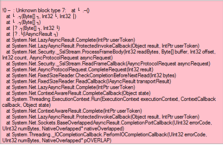

F.A.Q
Forum
Bagaimana mendaftar Forum OtomaX yang beralamat di www.forum.orisinil.com?
Silahkan kirim email ke alamat support@otomax-software.com sampaikan Anda ingin mendaftar forum otomax dengan menyerahkan:
- Nama calon Username Forum yang diinginkan, ini akan menjadi nama Anda di Forum, misalnya: Ridwan.
- Email Anda, ini akan digunakan untuk mengirimkan Password Login di Forum, misalnya: ridwan@gmail.com.
Pendaftaran akun forum otomax akan diproses dan silahkan ditunggu. Jika dalam 1x24 jam belum diproses, mohon kirim ulang pendaftaran Anda diatas.
Bagaimana mengganti password Akun Forum?
-
Masukkan Akun dan Password Forum Anda, dan kemudian klik tombol Login
-
Arahkan pointer mouse ke kata Profile, kemudian pilih Account Setting dan klik.

-
Lakukan seperti petunjuk di gambar:

- Selesai
Bagaimana mendapatkan stempel User OtomaX pada Akun Forum?
- Anda harus memiliki Software Pulsa OtomaX berbayar, bila belum silahkan membeli terlebih dahulu, selengkapnya klik disini.
-
Kirim email ke alamat email support@otomax-software.com dengan judul: Permohonan Stempel User OtomaX. Di dalam email sampaikan Anda mengajukan
permohonan stempel User OtomaX serta lampirkan data - data berikut ini:
- Username Forum OtomaX Anda. Apabila belum memiliki, silahkan mendaftar dahulu.
- IMSI / OID OtomaX.
- Nama pemilik.
- Alamat lengkap.
- Serial Number (SN).
- Permohonan Anda akan diproses, dan silahkan ditunggu. Jika dalam 1x24 jam belum mendapat stempel kirim ulang permohonan stempel di atas.
- Selesai.
Bagaimana agar dapat memposting lapak/dagangan di board Bursa Jual-Beli di Forum?
Anda harus pengguna OtomaX Berbayar (bila bukan, silahkan membeli dahulu klik disini serta mengajukan stempel User OtomaX); dan OtomaX Anda dalam masa berlaku (bila tidak, silahkan membayar iuran dahulu) klik disini.
Dimanakah posting lapak/dagangan di Forum yang benar?
Lokasi posting lapak/dagangan di Forum yang benar ialah di Board Bursa Jual-Beli. Perhatikan gambar di bawah ini:

Keterangan:
- All Operator (multi). Untuk memposting lapak/dagangan All Operator (multi), pendaftaran master, dealer, sub dealer, reseller pulsa.
- Chip. Untuk memposting lapak/dagangan stok Chip (Mkios, MTronik, Dompet Pulsa (DOMPUL), Esia, Three, Axis, dll); perdana dan voucher gesek.
- Host to Host. Untuk memposting lapak/dagangan Produk Host to Host sesama server pulsa.
- Hardware. Untuk memposting lapak/dagangan ponsel, komputer, modem, router, server, inverter, kabel data, periperal, dll.
- Jasa dan Kerjasama. Untuk memposting lapak/dagangan berupa jasa, misalnya: jasa koneksi internet, jasa pembuatan website, jasa pembuatan software, domain, hosting, dll.
- Software. Untuk memposting lapak/dagangan berupa software/aplikasi original, misalnya: sistem operasi, office, utility, software pendukung, dll.
- Lain - lain. Untuk memposting lapak/dagangan yang belum ada kategorinya (artinya tidak termasuk salah satu nomor 1 s/d nomor 6).
Administratif
Bagaimana membayar iuran OtomaX?
Perlu diketahui iuran OtomaX wajib dibayarkan 1 tahun sekali, paling cepat dapat ditunaikan 6 bulan sebelum masa berlaku OtomaX berakhir. Besaran iuran bervariasi tergantung Edisi OtomaX Anda, selengkapnya klik disini. Khusus pembelian baru akan dikenakan iuran pada tahun kedua (artinya gratis iuran 1 tahun pertama).
Berikut ini tata cara membayar iuran OtomaX:
- Cek masa berlaku OtomaX Anda, masuk menu Bantuan -> Tentang -> box Masa Berlaku, karena iuran hanya dapat dibayarkan paling cepat 6 bulan sebelum masa berlaku berakhir.
- Siapkan uang di Rekening Bank Anda, pastikan mencukupi untuk biaya iuran. Kami menerima pembayaran melalui Bank BCA, BNI dan Mandiri.
- Kontak Kami di ID Telegram: @mam_service atau HP/WA/TG: +628-5258-1112-30. Sampaikan Anda ingin membayar iuran.
- Serahkan IMSI Software OtomaX Anda. Untuk mengetahui IMSI klik disini.
- Tunggu hingga Kami memberikan jumlah uang yang harus Anda transfer sebagai biaya iuran dan nomor rekening tujuan transfer.
- Lakukan transfer sesuai jumlah uang yang Kami berikan ke rekening tujuan termaktub.
- Konfirmasikan ke Kami bahwa Anda telah melakukan transfer.
- Setelah transfer Anda tervalidasi, maka pembayaran iuran akan diproses.
- Kami akan menginformasikan pembayaran iuran berhasil, berikut SN (Serial Number) baru untuk OtomaX Anda.
- Pada OtomaX, masuk menu Bantuan -> Tentang -> Serial Number: Masukkan SN (Serial Number) yang Kami berikan -> centang Checkbox sebelah kiri tombol Simpan -> klik tombol Simpan -> klik OK -> OK -> tutup OtomaX -> jalankan kembali OtomaX.
- Pembayaran iuran selesai.
Bagaimana melakukan upgrade OtomaX?
Upgrade Software OtomaX ialah menaikkan Edisi OtomaX misalnya dari Edisi Mini ke Edisi Lite, dari Edisi Lite ke Edisi Standard, dari Standard ke Edisi Ultimate dan seterusnya. Anda dapat meng-upgrade dengan hanya membayar selisih harga (berdasar harga terbaru) dan biaya administrasi Rp100.000. Jadi, misalnya Edisi OtomaX Anda saat ini Edisi Standard (harga saat ini Rp3.000.000) dan ingin upgrade ke Edisi Advanced (harga saat ini Rp7.000.000); maka Anda cukup membayar Rp4.000.000 (Rp7.000.000 - Rp3.000.000 = Rp4.000.000) ditambah biaya Administrasi Rp100.000, total menjadi Rp4.100.000. Selengkapnya tentang rincian biaya Upgrade klik disini.
Proses Upgrade hanya membutuhkan waktu sekitar 1 - 5 menit, jadi tidak perlu khawatir transaksi Anda terganggu, adapun alurnya sebagai berikut:
- Siapkan uang di Rekening Bank Anda, pastikan mencukupi untuk biaya Upgrade. Kami menerima pembayaran melalui Bank BCA, BNI dan Mandiri.
- Kontak Kami di ID Telegram: @mam_service atau HP/WA/TG: +628-5258-1112-30. Sampaikan kepada Kami Anda ingin Upgrade ke Edisi apa, misalnya Upgrade ke Edisi Advanced seperti contoh di atas.
- Serahkan IMSI Software OtomaX Anda. Untuk mengetahui IMSI klik disini.
- Tunggu hingga Kami memberikan jumlah uang yang harus Anda transfer sebagai biaya Upgrade dan nomor rekening tujuan transfer.
- Lakukan transfer sesuai jumlah uang yang Kami berikan ke rekening tujuan termaktub.
- Konfirmasikan ke Kami bahwa Anda telah melakukan transfer.
- Setelah transfer Anda tervalidasi, maka Upgrade akan diproses.
- Kami akan memberikan lisensi (SN/ Serial Number) OtomaX.
- Download file OtomaX edisi tujuan Upgrade Anda di Forum OtomaX pada room khusus User OtomaX disini (pada contoh di atas download edisi Advanced, pilih versi yang Anda inginkan). Bila belum punya Akun Forum silahkan mendaftar dahulu dan mengajukan Stempel User OtomaX.
- Extraxt file OtomaX yang baru Anda download.
- Tutup OtomaX dan kemudian timpa file OtomaX edisi lama dengan file OtomaX edisi baru (Advanced) yang baru saja Anda download.
- Jalankan OtomaX, Masuk menu Bantuan -> Tentang -> Serial Number: Masukkan SN (Serial Number) yang Kami berikan -> centang Checkbox sebelah kiri tombol Simpan -> klik tombol Simpan -> klik OK -> OK -> tutup OtomaX.
- Upgrade selesai.
Di dalam jendela log kami menemukan sebuah pesan seperti di bawah ini, apa yang harus kami lakukan?
Serial Number Anda akan kadaluarsa. Silahkan hubungi OtomaX Center atau Mitra untuk mendapatkan yang baru. http://www.otomax-software.com
Pesan di atas akan muncul pada saat terjadi 2 kondisi:
-
Pembelian baru.
Jika OtomaX Anda pembelian baru, yang perlu Anda lakukan ialah menghubungi Mitra OtomaX atau OtomaX Center untuk mengajukan permohonan SN (Serial Number) baru, dan kemudian memasukkannya ke dalam OtomaX menggantikan SN yang lama. Hal ini merupakan prosedur pembelian baru. -
Pergantian SIM Card dongle.
Jika Anda melakukan Ganti SIM Card dongle OtomaX, yang perlu Anda lakukan ialah memastikan SIM Card dongle OtomaX lama Anda telah Anda kirimkan ke pengembang, dan bila dipastikan telah dikirimkan hubungi Mitra OtomaX atau OtomaX Center untuk mengajukan permohonan SN (Serial Number) baru, dan kemudian memasukkannya ke dalam OtomaX menggantikan SN yang lama. Hal ini merupakan prosedur pergantian SIM Card dongle.
Bagaimana me-reset password OH (OtomaX HTH)?
Adakalanya kita lupa akan password OH (OtomaX HTH), berikut langkah me-resetnya:
- Siapkan IMSI dan OID OtomaX Anda (IMSI dan OID bisa Anda dapatkan di menu Bantuan -> Tentang -> IMSI | OID).
- Kirim email ke alamat support@otomax-software.com, sampaikan permohonan untuk reset password OH (OtomaX HTH) serta sebutkan IMSI dan OID OtomaX Anda.
- Tunggu hingga mendapat balasan email bahwa permohonan Anda sudah diproses. Jika dalam 1x24 jam belum ada balasan, kirim ulang permohonan Anda di atas.
- Selesai.
Bagaimana ganti SIM Card dongle OtomaX?
Anda dapat melakukan pergantian SIM Card dongle OtomaX dengan memilih salah satu dari 2 cara, yakni:
-
Ganti SIM Card dengan kirim SIM Card lama.
Apabila memilih cara ini SIM Card lama harus dikirimkan ke pengembang. Jika memilih cara ini biaya Rp100.000. -
Ganti SIM Card dengan tanpa kirim SIM Card lama.
Apabila memilih cara ini SIM Card lama tidak perlu dikirimkan ke pengembang, dan selain biaya ganti SIM Card Rp100.000 akan dikenakan biaya tambahan yang besarnya sama dengan biaya balik nama sesuai edisi OtomaX; terkait besaran biaya balik nama selengkapnya klik disini. Cara ini dapat dimanfaatkan misalnya: ketika SIM Card lama tidak dapat Anda kirimkan dengan alasan tertentu, SIM Card lama hilang atau lainnya.
Berikut ini rincian biaya ganti SIM Card dongle OtomaX:
| Edisi | Ganti SIM Dengan Kirim SIM Lama | Ganti SIM Dengan Tanpa Kirim SIM Lama |
|---|---|---|
| Mini | Rp100.000 | Rp200.000 |
| Lite | Rp100.000 | Rp250.000 |
| Standard | Rp100.000 | Rp300.000 |
| Pro | Rp100.000 | Rp350.000 |
| Advanced | Rp100.000 | Rp400.000 |
| Enterprise | Rp100.000 | Rp400.000 |
| Ultimate | Rp100.000 | Rp400.000 |
| Mars | Rp100.000 | Rp200.000 |
| Venus | Rp100.000 | Rp200.000 |
| Jupiter | Rp100.000 | Rp200.000 |
Adapun langkah - langkahnya sebagai berikut:
- Pastikan kontak Pemilik OtomaX (Nomor HandPhone, alamat email atau Gtalk) yang didaftarkan saat pembelian masih aktif sehingga dapat dikirimi kode verifikasi pergantian Sim Card.
- Siapkan IMSI Sim Card lama OtomaX dan IMSI Sim Card calon pengganti. Terkait IMSI klik disini.
- Cek masa berlaku OtomaX, karena pergantian Sim Card hanya dapat dilakukan jika dalam masa berlaku. Bila tidak dalam masa berlaku silahkan membayar iuran terlebih dahulu, klik disini.
- Siapkan uang di Rekening Bank Anda, pastikan mencukupi untuk biaya Ganti Sim Card. Kami menerima pembayaran melalui Bank BCA, BNI dan Mandiri.
- Kontak Kami di ID Telegram: @mam_service atau HP/WA/TG: +628-5258-1112-30. Sampaikan Anda ingin melakukan pergantian Sim Card dan serahkan IMSI OtomaX lama dan IMSI Sim Card calon pengganti ke kami.
- Sampaikan alasan Anda mengajukan pergantian Sim Card dongle, misalnya: Sim Card rusak atau alasan lainnya.
- Tunggu hingga Kami memberikan jumlah uang yang harus Anda transfer sebagai biaya pergantian Sim Card dan nomor rekening tujuan transfer.
- Lakukan transfer sesuai jumlah uang yang Kami berikan ke rekening tujuan termaktub.
- Konfirmasikan ke Kami bahwa Anda telah melakukan transfer.
- Setelah transfer Anda tervalidasi, maka pergantian Sim Card akan diproses.
- Serahkan ke kami kode verifikasi pergantian Sim Card yang dikirim ke Kontak Pemilik OtomaX (Nomor HandPhone, alamat email atau Gtalk).
- Kami akan memberikan lisensi (SN/ Serial Number) OtomaX baru, beserta alamat tujuan pengiriman Sim Card lama OtomaX jika memilih cara ganti Sim Card nomor 1.
- Jika memilih pergantian Sim Card cara nomor 1 segera kirimkan Sim Card lama OtomaX ke alamat yang telah kami berikan. Keterlambatan pengiriman akan mengakibatkan tidak bekerjanya OtomaX Anda.
- Selesai.
Bagaimana kalau ingin ganti SIM Card Dongle, namun kontak Pemilik OtomaX (Nomor HandPhone, alamat email atau Gtalk) yang didaftarkan saat pembelian sudah tidak aktif lagi?
Silahkan kirim email ke alamat support@otomax-software.com sampaikan hal di atas.
Apakah setelah proses pergantian SIM Card Dongle, Server dapat langsung digunakan transaksi kembali?
Iya, dapat langsung digunakan transaksi kembali saat itu juga.
Tehnis
Bagaimana melakukan update OtomaX?
- Cek masa berlaku OtomaX Anda, masuk menu Bantuan -> Tentang -> box Masa Berlaku, karena update hanya dapat dilakukan bila OtomaX dalam masa berlaku. Bila masa berlaku berakhir silahkan membayar iuran terlebih dahulu, selengkapnya klik disini.
- Login ke Forum OtomaX dengan menggunakan account
berstempel User OtomaX. Bila belum punya account klik disini dan klik disini.
Setelah login, pilih menu Khusus User OtomaX.
Pilih menu File Update.

Pilih versi OtomaX yang Anda inginkan, pada contoh ini kita pilih versi 3.6.7.

- Pada halaman di bawah, download file update OtomaX sesuai edisi yang Anda miliki:

- Extraxt file update OtomaX hasil download dan kemudian tutup OtomaX.
- Copy dan paste file update hasil extract ke folder OtomaX (lokasi yang disediakan untuk instalasi OtomaX, lihat disini); atau ke folder lokasi instalasi OtomaX Anda. Bila muncul jendela konfirmasi: klik Copy and Replace.
- Selesai.
Catatan: Khusus apabila ingin update ke OtomaX v4.0.0 atau lebih tinggi pastikan telah menginstall Microsoft .NET Framework v4.5 atau lebih tinggi, klik disini.
Apa yang perlu dibackup saat akan pindah PC?
Yang perlu dibackup dalam flashdisk atau harddisk external dan kemudian dipindahkan ke PC baru ialah:
- Folder Master, OtomaX, Database (lihat disini); atau file Master Software Pendukung OtomaX, OtomaX, driver HandPhone atau Modem dan Database OtomaX.
- SN (Serial Number).
- Selesai.
Kenapa OtomaX not responding, hang, atau sering restart?
Problem tersebut sebenarnya sudah muncul sejak versi terdahulu namun hanya terjadi pada sebagian pengguna OtomaX, adapun sebagian lain tidak mengalaminya. Biasanya problem ini akan hilang dengan sendirinya ketika diupdate dengan versi lebih tinggi dari versi yang mengalami problem ini.
Lazimnya problem di atas dibarengi dengan OtomaX menutup dengan sendirinya, IM Center kurang lancar, OtomaX tidak bisa diklik dan lain sebagainya, penyebabnya ialah:
- Device seperti modem dan HP belum terintegrasi secara baik dengan versi baru, integrasikan kembali dengan baik.
- Internet tidak stabil. Yang dibutuhkan bukan internet cepat tapi internet stabil, gunakan internet yang stabil. Indihome, Fiber Optik, kecepatan 100Mbps tidak jaminan internet stabil sepanjang waktu.
- Penggunaan resource (kemampuan Komputer) tidak sesuai dengan resource yang tersedia, upgrade resource ke yang lebih memadai. Misalnya Prosesor Anda saat ini Core i3 ganti Core i5 atau lebih tinggi; RAM Anda saat ini 2 GB ganti 4 GB atau lebih; dan seterusnya.
- Terdapat komponen yang dibutuhkan OtomaX namun belum tersedia di Sistem Operasi atau Windows (khusus versi 3.8.2 atau lebih tinggi), lakukan update Sistem Operasi (Windows).
- Terlalu banyak log modul yang muncul secara bersamaan (khusus versi 3.9.0 atau lebih tinggi), matikan log modul dengan klik Setting -> Lain - lain -> Key: TurnOffModuleLogs pada kolom nilai isi: 1 -> klik tombol Simpan -> tutup buka OtomaX -> selesai.
- Server jabber yang digunakan sedang tidak stabil, ganti akun jabber dari server jabber yang lain. Misalnya saat ini menggunakan akunjabber@xmpp.com ganti dengan akunjabber@jbr.com.
- Layanan internet banking dari bank tertentu sedang tidak stabil, matikan sementara modul Internet Banking. Misalnya yang tidak stabil internet banking Mandiri, matikan sementara modul Mandiri.
Mengapa cek tagihan mines tidak bekerja?
Dikarenakan untuk OtomaX versi 3.6.3 atau lebih tinggi balasan cek tagihan (sistem saldo) mines dijadikan satu dengan cek saldo dengan pembeda tanda strip (-), sedangkan di versi sebelumnya dipisahkan sendiri - sendiri. Hal ini berlaku untuk semua edisi OtomaX mulai Mini hingga Ultimate.
OtomaX HTH tidak mau login dan Kami menemukan pesan error seperti di bawah ini:
!c WebException: The operation has timed out
!c WebException: The underlying connection was closed: An unexpected error occurred on a receive.
!c WebException: Unable to connect to the remote server.
Pesan tersebut menginformasikan bahwa OtomaX HTH sedang mengalami gangguan, silahkan kirim email ke support@otomax-software.com agar segera ditangani oleh team terkait.
SMS tidak lancar terserap oleh SMS Center, kenapa?
Banyak faktor yang menyebabkan SMS transaksi dari Reseller tidak lancar terserap oleh OtomaX, baik faktor internal maupun external, diantaranya:
- Initial Commands (di Terminal -> klik kanan -> Setting -> box: Initial Commands) tidak terisi AT Command yang benar, pastikan terisi: AT+CMGF=0.
- Sim Card SMS Center menurun performanya, lakukan pergantian kartu ke kantor Operator terkait (Gallery).
- Sim Card SMS Center masuk dalam blacklist/pantauan operator, ganti Sim Card SMS Center dengan Sim Card lain.
- Sim Card SMS Center stress (umumnya terjadi bila berada di Modem dalam waktu lama), pindah ke HandPhone beberapa jam.
- HandPhone atau Modem yang ditempati Sim Card SMS Center telah menurun performanya, lakukan pembaharuan HandPhone atau Modem.
- Kabel data HandPhone atau Modem yang menghubungkan ke PC menurun performanya, lakukan pembaharuan kabel data.
- Driver HandPhone atau Modem kurang tepat terpasang, lakukan uninstall dan install ulang driver.
- Port USB Motherboard penghubung USB kabel data HandPhone atau Modem menurun performanya, lakukan pembaharuan Motherboard atau USB Card PC.
- Supply listrik kurang stabil atau bahkan kurang, tingkatkan kapasitas atau ganti Power Supply PC.
- Jaringan operator abal - abal, signal penuh/mencukupi namun tenaga lemah, hubungi operator terkait.
Periksa semua faktor - faktor di atas satu persatu sehingga ditemukan penyebab konkrit di tempat Anda, sehingga ditemukan formula yang tepat; beda lokasi, beda orang, beda server, beda penyebabnya, beda pula solusinya.
Ketika saya menggunakan OtomaX versi 3.7.0, saya menjumpai pesan error seperti di bawah ini, Apa dan bagaimana?



Pesan error diatas memberitahukan kepada Anda bahwa:
- Server XMPP/Jabber yang Anda pakai di IM Center ada yang sedang down. Matikan Modul IM Center yang down tersebut. Untuk solusi lainnya pakai layanan chat Jabber/XMPP sendiri, klik disini.
- Internet Anda tidak stabil atau kurang cocok dengan layanan chat Server XMPP/Jabber yang Anda pakai. Ganti dengan ISP (Internet Service Provider) lain.
Saya transaksi menggunakan modul OtomaX HTH namun mendapati pesan seperti di bawah ini:
Wrong Signature
Hal tersebut diakibatkan adanya perubahan OID di sisi server OtomaX Anda atau Supplier Anda, silahkan dilakukan penyesuaian OID, hubungi Supplier Anda. Adapun terkait setting OtomaX HTH klik disini.
Apa Perbedaan IP Client, IP Center, IP Gateway?
Perbedaannya adalah
- IP Client berguna hanya sebagai pendukung modul IP Center dan IP Gateway dalam transaksi IP. Artinya dengan hanya IP Client belum dapat transaksi IP secara sempurna.
- Transaksi IP menggunakan IP Center membutuhkan IP Publik Statis, sementara dengan IP Gateway tidak diperlukan.
- Transaksi IP menggunakan IP Gateway harus mendaftar layanan IP Gateway, sementara dengan IP Center tidak perlu mendaftar.
-
Alur transaksi, perhatikan gambar di bawah ini:
Untuk mengetahui lebih lanjut tentang transaksi IP klik IP Client, IP Center dan IP Gateway.
Di OtomaX saya muncul pesan seperti di bawah ini:

- Masuk menu Bantuan -> Tentang.
- Centang Checkbox sebelah kiri tombol Simpan.
- Klik tombol Simpan -> klik Ok -> klik Ok.
- Tutup OtomaX.
- Selesai
Bagaimana menangani perihal SMS balasan keterangan sukses terkirim akan tetapi Reseller mengaku tidak menerima SMS balasan atau SMS sering gagal kirim?...
Hal tersebut dapat diakibatkan salah satu dari beberapa faktor kemungkinan berikut ini:
- Kosa kata yang digunakan di SMS balasan termasuk dalam blacklist operator. Ubah kosa kata di SMS balasan.
- Jumlah karakter SMS melebihi yang didukung. Perpendek SMS balasan.
- Interval kirim SMS terlalu cepat. Perlambat delay kirim SMS.
- Nomor terblokir karena dianggap spam oleh operator. Ganti nomor sender.
- Nomor rusak/error. Ajukan pergantian kartu ke galeri atau grapari sesuai operator nomor yang digunakan.
- Gangguan atau penurunan kualitas dari operator. Hubungi call center operator terkait atau datangi kantornya.
- Kondisi jaringan operator kartu yang dipakai Reseller di wilayahnya sedang gangguan atau penurunan kualitas. Arahkan Reseller memakai operator lain.
- HP Reseller terdapat kesalahan setting atau kurang sehat. Arahkan Reseller untuk memakai HP lain.
- SMS terkirim dengan fitur Collect SMS operator. Lakukan isi ulang pulsa pada nomor atau ganti nomor sender.
Team Viewer di tempat kami tidak dapat digunakan untuk meremote seperti biasa sejak tanggal 30/05/2018, terdapat sebuah pesan muncul yang isinya diminta untuk melakukan pembelian?
Agar dapat meremote kembali terdapat beberapa pilihan, Anda dapat memilih salah satu:
- Meng-uninstall Team Viewer yang sedang Anda pakai saat ini, kemudian meng-install Team Viewer versi lama (misalnya v6); Anda bisa mendapatkannya dengan klik disini. Kalau ini tidak berhasil, Anda dapat mempertimbangkan pilihan ke-2 di bawah ini.
- Membeli lisensi Team Viewer kepada perusahan tersebut, klik disini.
- Beralih menggunakan aplikasi lain yang mempunyai fungsi sejenis, salah satunya ialah Ultra Viewer (UV) klik disini.
Di Modul Internet Banking Mandiri terkadang muncul pesan seperti di bawah ini:
Error: User ID atau Password yang Anda masukkan salah. Silakan coba lagi.
Pesan tersebut muncul saat koneksi internet kurang stabil atau respon dari Website Internet Banking Mandiri lambat. Non Aktifkan Modul Mandiri, lalu login di Website Internet Banking Mandiri, kemudian logout. Tunggu beberapa saat, lalu Aktifkan kembali Modul Mandiri di OtomaX; atau ganti koneksi internet.
Modul Internet Banking BCA tidak membaca mutasi, dan muncul pesan error seperti dibawah, bagaimana menanganinya?
Error: tidak dapat membaca form
Hal tersebut diakibatkan perubahan sistem Internet Banking BCA sejak 23 Juli 2018, untuk menanganinya silahkan update OtomaX Anda ke versi 3.8.2 atau lebih tinggi. Adapun tata cara update klik disini.
Perlu diketahui, sebelum melakukan update OtomaX pastikan Anda:
- Telah menginstall Service Pack 1 (SP1) apabila menggunakan Windows 7, kalau belum klik disini (download & install).
- Telah menginstall Internet Explorer versi 11, kalau belum klik disini (download & install).
- Di Modul BCA -> klik kanan -> klik Setting pada box Cek mutasi setiap n detik isi dengan rentang angka 60 s/d 140. Misalnya isi 62, 65, 73, 81, 99, atau lainnya; silahkan dicoba - coba mana yang cocok di tempat Anda.
Setelah update ke versi 3.8.2 Modul Internet Banking BCA muncul pesan error sebagai berikut dan mutasi tidak terbaca, bagaimana agar dapat membaca mutasi kembali?
Error: tidak dapat mengolah mutasi. Konten disimpan ke Clipboard.
Terdapat beberapa pilihan cara agar mutasi terbaca kembali, dapat dicoba satu per satu:
-
Reset Internet Explorer.
- Jalankan Internet Explorer -> Tekan tombol Alt + X
- Klik Internet options -> klik Tab Advanced
- Klik tombol Reset akan muncul pop up konfirmasi dan klik tombol Reset
- Klik tombol close
- Selesai
- Gonta - ganti settingan di modul BCA yakni box: Cek mutasi setiap n detik dan cekbox: Logout setiap habis cek mutasi. Silahkan dirubah - rubah mana yang cocok di tempat Anda. Misalnya mula - mula box: Cek mutasi setiap n detik isi 100 dan cekbox: Logout setiap habis cek mutasi tidak dicentang, maka coba Logout setiap habis cek mutasi dicentang. Jika belum berhasil, coba box: Cek mutasi setiap n detik isi 125 dan cekbox: Logout setiap habis cek mutasi tidak dicentang; kalau masih belum berhasil coba cekbox: Logout setiap habis cek mutasi dicentang. Dan begitu seterusnya, lakukan gonta - ganti settingan sampai ketemu settingan yang cocok di tempat Anda.
- Restart Komputer.
- Update Sistem Operasi (Windows).
Bagaimana migrasi dari software server pulsa lain ke software OtomaX?
- Beli software OtomaX, klik disini.
- Ketik satu per satu data Reseller atau Agen bertahap dari software lain ke software OtomaX. Agen yang datanya telah terinput di OtomaX, arahkan untuk bertransaksi ke OtomaX; sementara Agen yang datanya belum terinput arahkan untuk bertransaksi ke software lain.
- Selesai. Dengan cara demikian, Reseller atau Agen tetap dapat transaksi (tanpa perlu off transaksi) saat proses migrasi.
Di log aplikasi Online Backup muncul pesan error seperti dibawah ini, apa yang perlu dilakukan?
Server: Please update this application to version 3.01 or later
- Download file OtomaX Online Backup versi terbaru klik disini, dan kemudian extract.
- Klik 3 tanda titik bertumpuk di sisi kiri atas tampilan Online Backup -> klik Quit Online Backup -> klik OK.
- Timpa file Online Backup versi lama dengan file Online Backup hasil download.
- Selesai
Di log OtomaX muncul pesan error seperti dibawah ini (umumnya setelah update ke versi 3.8.9 atau lebih tinggi), apa yang perlu dilakukan?
TLS12 Error: NotSupportedException: System: The requested security protocol is not supported.
Ada beberapa pilihan untuk menanganinya, Anda dapat mencobanya satu per satu dan restart Komputer sesudahnya:
- Install Transport Layer Security (TLS) v1.2 klik disini.
- Install Microsoft .Net Framework 3.5 Online Installer klik disini.
- Update windows.
- Install ulang windows menggunakan file ISO windows yang lain.
Bagaimana memindahkan OtomaX dari komputer lama ke komputer baru?
- Install software pendukung OtomaX di komputer baru, jika menggunakan Windows XP klik disini, Windows 7 klik disini, dan jika Windows 10 klik disini.
- Copy file - file OtomaX dari komputer lama dan kemudian pindahkan ke komputer baru.
- Pindahkan simcard dongle OtomaX ke komputer baru.
- Selesai.
Modul Internet Banking BRI (mulai tanggal 13/06/2020) tidak bisa membaca mutasi dan muncul pesan error seperti di bawah ini, kira - kira disebabkan apa?
Captcha tidak ditemukan
Di tanggal tersebut BRI melakukan razia terhadap robot (akses Internet Banking menggunakan aplikasi) dan membatasi akses terhadap yang terjaring razia, akibatnya mengakses Internet Banking BRI menggunakan robot tidak bisa dilakukan. Adapun akses secara manual dapat dilakukan.
Dimungkinkan Modul Internet Banking BRI akan normal sendiri manakala BRI telah melonggarkan pembatasan akses kepada robot; atau lakukan update OtomaX ke v4.0.0.
Di Log Sistem OtomaX (umumnya setelah update ke v4.0.0 atau lebih tinggi) muncul pesan:
Verifikasi gagal: WebException: The remote name could not be resolved
Verifikasi gagal: WebException: Unable to connect to the remote server.
Verifikasi gagal: WebException: The Operation has timed out.
Verifikasi gagal: WebException: The underlying connection was closed: An unexpected error occured on a receive.
Verifikasi gagal: Exception: Could not find token at index 0.
Verifikasi gagal: Invalid session.
Abaikan pesan tersebut selama modul Inbox Processor, Trx Processor, modul online seperti IM Center dan lainnya masih nyala serta transaksi masih berjalan. Jika tidak, Anda dapat melakukan tindakan berikut satu per satu:
- Restart Komputer.
- Restart modem koneksi internet.
- Ganti koneksi internet dari operator yang lain.
- Jika tindakan 1, 2, dan 3 sudah dilakukan namun belum normal segera kirim email ke support@otomax-software.com.
Perlu diketahui terkadang proses verifikasi membutuhkan waktu agak lama kurang lebih 1 menit, harap sabar menunggu.
Di Log OtomaX HTH muncul pesan:
Please set the password first
Pilih OtomaX HTH -> klik kanan -> klik Setting -> tab: Setting -> pada box: Password isi password OtomaX HTH yang telah Anda buat sebelumnya. Jika lupa klik disini.
Di Log OtomaX HTH muncul pesan:
URL Base is not set
Untuk menanggulanginya, Anda dapat melakukan hal berikut satu per satu:
- Pilih modul OtomaX HTH -> klik kanan -> klik NonAktifkan -> pilih modul lagi -> klik kanan -> klik Aktifkan.
- Restart modem koneksi internet Anda.
- Kirim email ke support@otomax-software.com.
Setelah update ke OtomaX v4.0.0 menjadi tidak bisa transfer saldo dengan tujuan nomor handphone downline seperti dulu yaitu transfer.081232324345.200000.1234.
Masuk menu Administrasi -> Pengirim -> pastikan tidak ada 1 nomor handphone terdaftar 2 kali di 1 Reseller (contoh: +6281232324345 dan 081232324345) dengan klik tombol Find duplicates di kiri bawah. Jika ada, hapus nomor handphone yang dobel (081232324345).
Di log modul internet banking Mandiri muncul pesan error:
InvalidOperationException: session not created: This version of Chrome Driver only supports Chrome version 78 (SessionNotCreated)
Silahkan install Chrome Driver yang versinya sama dengan versi Google Chrome yang Anda gunakan, tata cara install klik disini.
Di log modul internet banking (umumnya di v4.0.0 atau lebih tinggi) muncul pesan error seperti di bawah:
ObjectDisposedException: Cannot access a disposed object.
Object name: '#=zOs7BIj6c1_yoR6vvercKzeJUjg4N'.
Tutup buka OtomaX.
Di log modul internet banking BRI mulai tanggal 12/08/2020 (umumnya di v4.0.0 atau lebih tinggi) muncul pesan error seperti di bawah dan tidak dapat membaca mutasi:
ArgumentOutOfRangeException: Parameter must be positive and < Width. Parameter name: x.
Di tanggal tersebut BRI memperbaharui metode untuk mem-breaking robot agar Captcha tidak muncul ketika internet banking BRI diakses oleh robot, yang kemudian mengakibatkan mutasi transaksi tidak muncul.
Abaikan pesan tersebut, nanti di saat robot lolos breaking, mutasi akan terbaca; dan atau tunggu update.